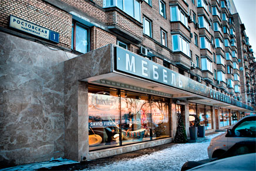

Какой мир я имею в виду? Какого мира мы стараемся добиться? Не Пакс Американа, навязанного миру американским оружием. Не мира могилы и не безопасности раба. Я говорю о подлинном мире, который делает жизнь на Земле достойной того, чтобы ее прожить, о том мире, который позволяет людям и государствам развиваться, надеяться и строить лучшую жизнь для своих детей, не о мире исключительно для американцев, а о мире для всех мужчин и женщин, не просто о мире в наше время, а о мире на все времена.
Я говорю о мире потому, что у войны появилось новое лицо. Тотальная война не имеет никакого смысла в век, когда великие державы могут содержать крупные и относительно неуязвимые ядерные силы и отказываться от капитуляции без применения этих сил. Она не имеет никакого смысла в век, когда одна единица ядерного оружия содержит в себе взрывную мощь, чуть ли не в десять раз превосходящую ту мощь, которая была применена всеми военно-воздушными силами союзников во Второй мировой войне. Она не имеет никакого смысла в век, когда смертоносные яды, которые образуются во время обмена ядерными ударами, могут быть доставлены ветром, водой, через почву и семена в самые дальние уголки планеты и поразить еще не родившиеся поколения.
Сегодня ежегодные затраты миллиардов долларов на оружие, приобретаемое для того, чтобы обеспечить уверенность, что мы никогда не будем им пользоваться, крайне необходимы для сохранения мира. Но приобретение таких лежащих втуне запасов оружия, которое пригодно лишь для разрушения, но не для созидания, не является единственным и тем более наиболее
Некоторые утверждают, что бесполезно говорить о мире во всем мире, о мировом праве или о мировом разоружении и что это не принесет пользы, пока лидеры Советского Союза не займут более разумную позицию. Я надеюсь, что они это сделают. Я считаю, что мы можем им помочь сделать это. Но я также считаю, что мы - и как индивиды, и как нация - должны пересмотреть нашу собственную позицию, так как наша позиция столь же важна, как и их позиция. И каждый выпускник этого университета, каждый мыслящий гражданин, обеспокоенный опасностью войны и желающий добиться мира, должен заглянуть себе в душу и проверить свое собственное отношение к возможностям достижения мира, к Советскому Союзу, к ходу "холодной войны" И К свободе и миру в нашей собственной стране.
Нам не следует соглашаться с этой точкой зрения. Наши проблемы созданы человеком, следовательно, они могут быть решены человеком. А человек может добиться всего, чего захочет. Ничто в судьбе человека не является для него недоступным. Человеческий разум и дух часто решали проблемы, казавшиеся неразрешимыми, и мы убеждены, что они в состоянии вновь это сделать.
Я не имею в виду концепцию абсолютного, беспредельного, глобального мира и доброй воли, о которой мечтают некоторые фантазеры и фанатики. Я не отрицаю значения надежды и мечты, но мы лишь вызываем разочарование и недоверие, делая это нашей единственной и немедленной целью.
Давайте сосредоточимся на более практическом, более достижимом мире, основанном не на внезапной революции в человеческой природе, а на постепенной эволюции человеческих институтов, на серии конкретных действий и эффективных соглашений, которые отвечают всеобщим интересам.
Быстровозводимые ангары Не существует одного-единственного ключа к этому миру, какой-то сложной или волшебной формулы, которая могла бы быть использована одной или двумя державами. Подлинный мир должен быть результатом труда большого числа государств, итогом множества разных действий. Он должен быть не статичным, а динамичным, изменяющимся в соответствии с требованиями каждого нового поколения. Ведь мир это процесс, путь решения проблем.
В таком мире останутся споры и конфликтующие интересы, как это происходит в семьях и государствах. Мир во всем мире, как и мир в обществе, не требует, чтобы каждый человек любил своего соседа, - он лишь требует, чтобы они жили вместе в обстановке взаимной терпимости, рея свои разногласия справедливым и мирным путем. И история учит , что вражда между государствами, как и между отдельными людьми, длится вечно. Какими бы ни представлялись нам объекты наших предпочтений и неприязни, течение времени и ход событий будут часто вновь удивительные изменения в отношения между государствами и соседями.
Так что давайте упорно продолжать наши усилия. Мир не должен быть недостижимым, а война не должна быть неизбежной. Более четко определив нашу цель, сделав ее более выполнимой и менее отдаленной, мы можем помочь всем людям увидеть ее и с надеждой решительно взяться за ее достижение.
Второе. Давайте пересмотрим наше отношение к Советскому Союзу. Бессмысленно считать, что его лидеры могут действительно верить в то, что пишут их пропагандисты. Если прочитать недавно опубликованный авторитетный советский текст, касающийся военной стратегии, то на его страницах можно найти невероятные и абсолютно беспочвенные заявления, подобные утверждению, что "американские империалистические круги готовятся развязать различные виды войны ... что существует реальная опасность превентивной войны, которая развязывается американскими империалистами против Советского Союза ... (и что) политические цели американских империалистов заключаются в том, чтобы экономически и политически поработить европейские и другие капиталистические страны ... (и) добиться мирового господства ... с помощью агрессивных войн".
Поистине, как писали уже давно: "Нечестивый бежит, когда никто гонится за ним"!. И тем не менее печально читать эти советские заявления и осознавать масштабы пропасти, лежащей между нами. Но это предупреждение - предупреждение американскому народу, чтобы он не попал в ту же западню, что и советский, чтобы он не видел лишь искаженный образ другой стороны, не считал конфликты неизбежными, договоренности - невозможными, а переговоры - всего лишь обменом угрозами.
Поистине, как писали уже давно: "Нечестивый бежит, когда никто гонится за ним"!. И тем не менее печально читать эти советские заявления и осознавать масштабы пропасти, лежащей между нами. Но это предупреждение - предупреждение американскому народу, чтобы он не попал в ту же западню, что и советский, чтобы он не видел лишь искаженный образ другой стороны, не считал конфликты неизбежными, договоренности - невозможными, а переговоры - всего лишь обменом угрозами.
Среди многих сходных черт, которыми обладают народы наших двух стран, нет более ярко выраженной, чем наше обоюдное отвращение к войне. Практически исключением в отношениях между крупными мировыми державами является тот факт, что мы никогда не воевали друг с другом. И никакое другое государство в истории войн не несло таких потерь, какие понес Советский Союз в ходе Второй мировой войны. Было потеряно по меньшей мере 20 миллионов жизней. Были сожжены или разграблены бесчисленные миллионы домов и ферм. В пустыню была превращена треть национальной территории, включая почти две трети промышленной базы - ущерб, соизмеримый с разрушением территории нашей страны к востоку от Чикаго.
Давайте пересмотрим наше отношение к "холодной войне", помня, что мы не стремимся к тому, чтобы набрать очки в споре. Мы не занимаемся здесь установлением степени вины каждого или предъявлением друг другу обвинения. Мы должны иметь дело с реально существующим миром, а не с тем, каким он мог бы быть, если бы история последних восемнадцати лет была иной.
Сегодня, в случае начала по той или иной причине новой тотальной войны, обе наши страны станут главными целями. Звучит иронией, но это абсолютно точный факт, что двум самым могущественным державам грозит самая серьезная опасность разрушения. Все, что мы построили, все, ради чего мы работали, будет уничтожено в первые 24 часа. И даже в условиях "холодной войны", при носящей тяготы и угрозы столь большому числу стран, включая самых близких союзников нашего государства, на долю наших двух стран выпадают самые серьезные тяготы. Это происходит потому, что обе наши страны расходуют на вооружения огромные суммы денег, которые с большей пользой могли бы быть потрачены на борьбу с невежеством, бедностью и болезнями. Наши страны оказались в порочном и опасном круге, где подозрительность одной стороны вызывает подозрительность другой, а новое оружие вызывает необходимость создания контроружия.
Короче говоря, и Соединенные Штаты и их союзники, и Советский Союз и его союзники взаимно глубоко заинтересованы в справедливом и подлинном мире и прекращении гонки вооружений. Соглашения в этой области соответствуют как интересам Советского Союза, так и нашим интересам. И даже на самые враждебно настроенные государства можно рассчитывать, что они согласятся и будут соблюдать те договорные обязательства, и лишь те договорные обязательства, которые учитывают их собственные интересы. Так что давайте не будем закрывать глаза на наше несходство, но давайте обратим внимание на наши общие интересы и на средства, с помощью которых это несходство может быть устранено. И если мы окажемся сейчас не в состоянии покончить С нашими разногласиями, мы можем, по крайней мере, содействовать тому, чтобы наши разногласия не угрожали миру. Поскольку в конечном счете самым главным является то, что мы все живем на этой маленькой планете. Мы все дышим одним и тем же воздухом. Мы все заботимся о будущем наших детей. И мы все смертны.
Поэтому мы должны продолжить наши поиски мира в надежде на то, что конструктивные изменения внутри коммунистического блока смогут приблизить те решения проблем, которые пока кажутся нам за пределами наших возможностей. Мы должны вести наши дела таким образом, чтобы соглашение о подлинном мире стало соответствовать интересам коммунистов.
Прежде всего, защищая свои собственные жизненно важные интересы, ядерные державы должны предотвращать такие конфронтации, которые ставят противника перед выбором между унизительным отступлением и ядерной войной. Выбирать подобный путь в ядерный век было бы лишь свидетельством банкротства нашей политики или же проявлением коллективного инстинкта смерти всего мира. Во имя достижения этих целей американское оружие является непровоцирующим, тщательно контролируемым, рассчитанным на сдерживание и способным на выборочное применение. Наши вооруженные силы настроены на мир и обучены проявлять сдержанность. Наши дипломаты проинструктированы избегать излишних раздражающих действий и сугубо риторической враждебности.
Будьте внимательны, все поля обязательны для заполнения. Спасибо!